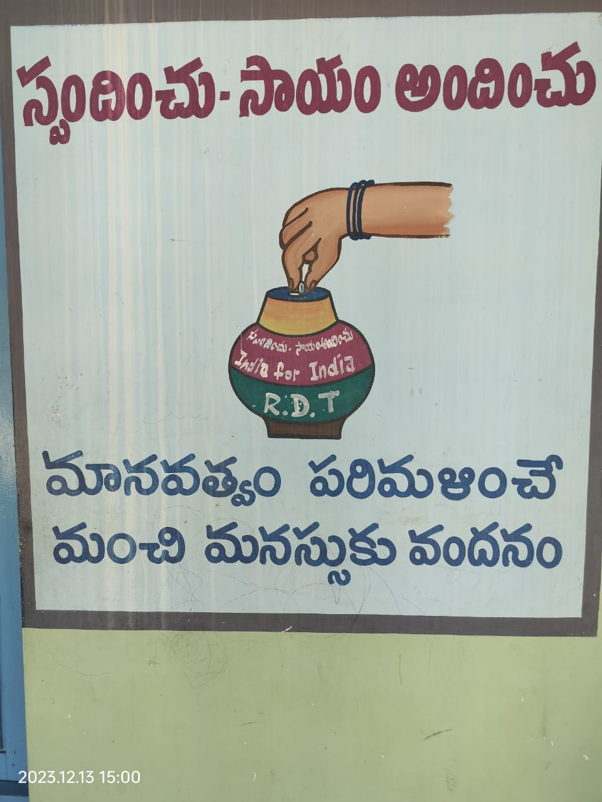
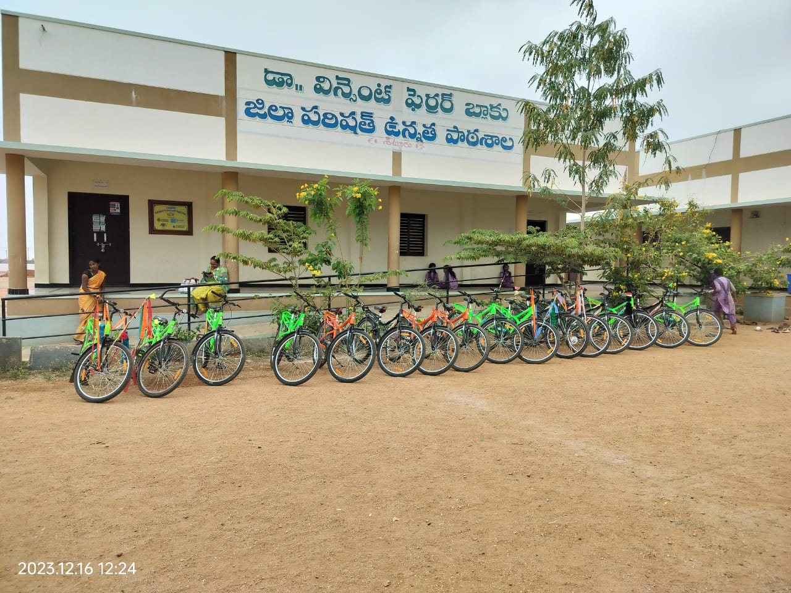
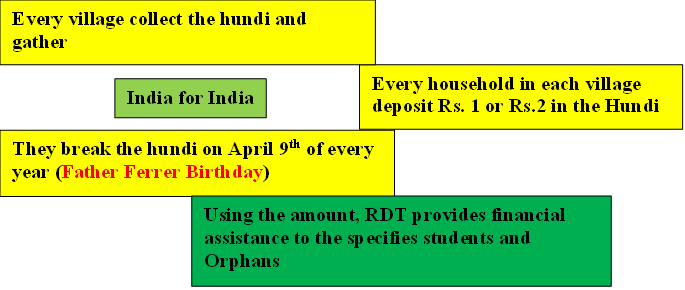
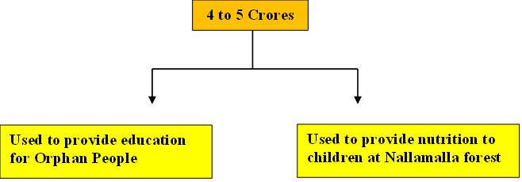

Assistance and Incentives


RDT provide students with incentives and assistance to ensure that they have access to the schools and are equipped with the basic necessities.
Bicycle Distribution
As part of a collaborative effort with government schools in the village, Rural Development Trust (RDT) is set to implement a transformative Bicycle Distribution Scheme, aimed at enhancing educational accessibility and addressing the commuting challenges faced by students. This initiative seeks to provide bicycles to eligible students, creating a tangible and sustainable solution to the hindrances posed by distance to school. The crux of the program is to distribute bicycles selectively, prioritizing students who reside at a considerable distance from the school, typically exceeding 4 kilometers. The rationale behind the Bicycle Distribution Scheme stems from a keen awareness of the significant impact that transportation barriers can have on students' access to education, particularly those residing in remote areas. By strategically collaborating with government schools, RDT endeavors to bridge this gap and create an inclusive learning environment where distance does not impede a child's journey to knowledge.
Eligibility for bicycle distribution is contingent upon the distance a student travels to attend school, with a specific focus on those residing at least 4 kilometers away. This criterion ensures that the program is tailored to benefit those who face the most formidable commuting challenges. By pinpointing students in far-flung areas, the initiative not only maximizes its impact on educational access but also aligns with the broader goal of fostering equity in education.
The provision of bicycles is a game-changer for students in remote locations. These two-wheeled vehicles not only serve as a mode of transportation but also represent a catalyst for empowerment. Students who would otherwise contend with long and arduous journeys on foot can now navigate the distance swiftly and safely. This not only reduces the time spent commuting but also alleviates the physical strain on young learners, allowing them to arrive at school energized and ready to engage in the educational process.
The collaboration between RDT and government schools exemplifies a community-driven approach to addressing educational challenges. By identifying the specific needs of students—those who traverse significant distances to attend school—the program tailors its intervention to where it is most needed. In doing so, it not only facilitates access to education but also reinforces the idea that education is a fundamental right that should be within reach for all, irrespective of geographical constraints.
Success Story:
School Name : ZPHS Government School
Village : Settur
In the heart of the Kalyandurg region, the Zilla Parishad High School (ZPHS) in Settur village stands as a beacon of education, catering to the academic aspirations of approximately 468 students. Recognizing the significance of promoting access to education, Rural Development Trust (RDT) collaborates closely with ZPHS to implement a targeted Bicycle Distribution Program. It is important to note that, given logistical constraints, RDT cannot extend this initiative to every student within the village. Consequently, a thoughtful collaboration is forged with ZPHS to identify and prioritize students undertaking significant journeys to school, ensuring that those facing formidable distances receive bicycles to ease their commute.
The collaboration between RDT and ZPHS underscores a shared commitment to overcoming barriers to education, with a focus on addressing the challenges posed by distance. By aligning resources and efforts, the partnership aims to create a meaningful impact on the educational landscape of Settur village, particularly for students who grapple with the complexities of long-distance commuting.
Within the student body of 468, the Bicycle Distribution Program is meticulously tailored to benefit those who reside at considerable distances from the school premises. This criterion ensures that the initiative is channeled towards the students facing the most daunting transportation challenges—typically those traveling extended distances to attend classes, sometimes exceeding the threshold of 4 kilometers. The objective is not only to make the journey to school more manageable but also to contribute to the broader goal of fostering a conducive learning environment. RDT's collaboration with ZPHS manifests in the identification process, where students from far-flung areas are singled out as eligible recipients of the bicycles. This targeted approach ensures that the program maximizes its impact, addressing the specific needs of those who encounter significant hurdles in commuting to school. The collaboration, therefore, becomes a catalyst for strategic intervention, directing resources where they are most needed.
The distribution of bicycles to eligible students serves as a practical solution to the transportation challenges faced by those residing at considerable distances from the school. By providing a reliable means of commute, the initiative not only reduces the physical strain on students but also empowers them with the means to attend classes regularly. The positive outcomes extend beyond improved attendance; students now have more time and energy for self-study at home, contributing to a more holistic and enriching educational experience.
One of the tangible benefits of the Bicycle Distribution Program is the anticipated increase in student attendance. As commuting becomes more accessible, students are more likely to attend classes regularly, contributing to a more engaged and participatory learning environment. This positive ripple effect not only benefits individual students but also fosters an atmosphere conducive to academic growth and community well-being.
General Scholarship Programme (India For India)
The IFI initiative, standing for "India for India," was inaugurated in 2012 as a heartfelt expression of gratitude towards Father Ferrer for his benevolent contributions to humanity. Rooted in a spirit of self-reliance and community empowerment, this program serves as a testament to the ethos of gratitude and sustainability. The core objective of IFI is to stimulate savings and cultivate financial resources within households and villages, fostering a sense of autonomy by reducing dependence on foreign funding sources from countries like Spain, Germany, and the USA. At its inception, IFI was conceived as a tribute to the visionary Father Ferrer, acknowledging his dedicated welfare work for the greater good. The essence of this program lies in encouraging individuals and communities to become architects of their own progress, cultivating a culture of financial prudence and collective empowerment. By steering away from external aid, IFI seeks to instill a sense of self-sufficiency, enabling communities to chart their own course towards prosperity.
Participation in IFI is not confined to a select demographic; even elderly members of the community contribute to this noble cause. Pensioners, as a gesture of gratitude, deposit a humble amount of Rs. 10 per month into the designated collection receptacle, known as the "hundi." This symbolic act of contributing a portion of their pension reflects not only their appreciation for Father Ferrer's welfare endeavors but also their commitment to the sustainability and self-sufficiency of their community. A significant hallmark of IFI is its adherence to financial transparency and accountability. All donations made to the Rural Development Trust (RDT) under the IFI initiative qualify for tax exemption under Section 80G of the Income Tax Act, 1961. This not only encourages philanthropy but also ensures that the financial contributions made by individuals are utilized effectively for the betterment of society.
Annually, an impressive sum ranging between 4 to 5 crores is mobilized through the India for India Programme. This substantial corpus is a testament to the collective commitment of individuals, both young and old, towards the vision of self-sustenance and community well-being. The financial resources amassed under IFI are earmarked for specific sectors that directly contribute to the welfare of the people in the village, ensuring targeted and impactful interventions. The allocation of funds under IFI is strategic and aligned with the overarching goal of community development. These funds are channeled into specified sectors that address the diverse needs of the population, ranging from education and healthcare to livelihood enhancement initiatives. By directing resources towards these crucial sectors, IFI strives to create a holistic and sustainable impact on the overall well-being of the community.

